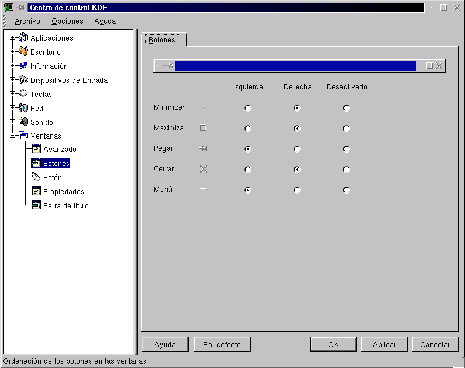

Next: Propiedades
Up: Personalización del comportamiento de
Previous: Avanzado
Índice General
Como se puede ver en la figura
3.14, también existe la
posibilidad de personalizar la posición de los botones en las
ventanas, cada botón tiene la opción de estar sobre la derecha o
izquierda de la ventana, o simplemente que no aparezca.
El botón Pegar sirve para que la ventana ``pegada'' no
desaparezca al cambiar de escritorio, puede ser útil para aquellas
aplicaciones que monitorean el sistema y que el usuario necesita tener
a la vista siempre.
Figura 3.14:
Configuración de la posición de los botones en las ventanas
|

|
Proyecto Cursos - LuCAS - http://lucas.hispalinux.es/htmls/cursos.html